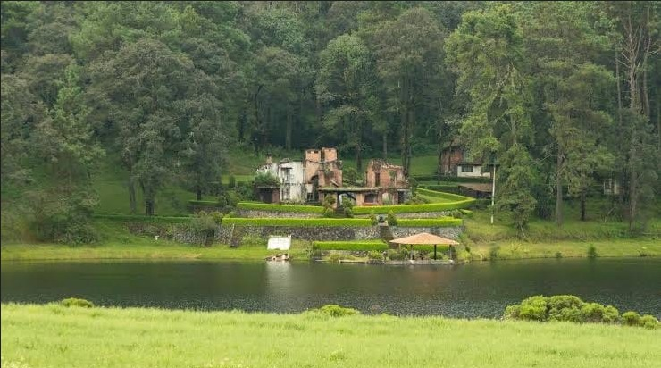

Pinal de marquesado

Pinal del Marquesado es una aldea en Municipio de Otzoloapan, Estado de México y tiene alrededor de 390 habitantes y una altitud aproximada de 2,390 metros. Pinal del Marquesado se encuentra cerca de la aldea de Rincón Grande, así como de Rincón Chico. Este lugar es turistico por su riqueza natural, sus paisajes y la tranquilidad que ofrece a sus visitantes.
La ruta Avándaro–Pinal del Marquesado es un camino que conecta Valle de Bravo con el municipio de Otzoloapan. Durante el recorrido se pueden apreciar hermosos paisajes naturales, montañas y bosques. Su principal atractivo es el mirador de Pinal del Marquesado, desde donde se pueden observar diferentes municipios.
Además, esta ruta es importante porque facilita la comunicación, el transporte y el turismo de las comunidades cercanas.
Laguna negra

La Laguna Negra es un pequeño cuerpo de agua natural ubicado en la zona de Pinal del Marquesado, en la región de Otzoloapan y Valle de Bravo, Estado de México. Se alimenta principalmente del agua de lluvia y se ha convertido en un atractivo turístico para las personas que visitan esta reg
Es atractiva por su belleza natural, su ambiente tranquilo y los paisajes que la rodean. Es un sitio que llama la atención de visitantes interesados en conocer lugares naturales, tomar fotografías y disfrutar del entorno.